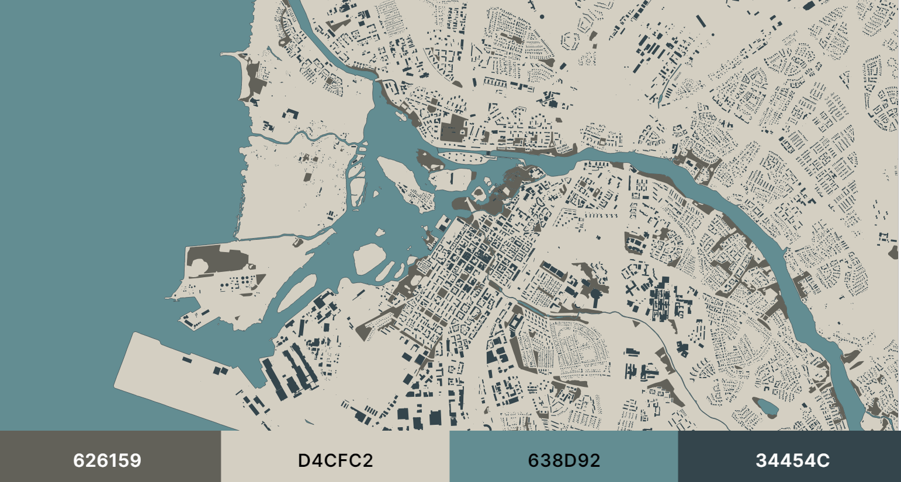

Harjoitus 1a: Vektoriaineistojen visualisointi: pisteet ja alueet
Harjoituksen sisältö
Harjoituksessa avataan QGIS ja tuodaan kurssilla käytettävät aineistot ohjelmistoon. Tämän jälkeen aineistojen kuvaustekniikkaa muutetaan joko oman tyylin tai esimerkkien mukaan.
Harjoituksen tavoite
Koulutettava oppii tuomaan GeoPackage-muodossa olevia aineistoja QGISiin ja visualisoimaan piste- ja polygonikohteita. Koulutettava ymmärtää vektori- aineistojen visualisoinnissa käytettävien työkalujen mahdollisuudet.
Kurssimateriaalin lataus
Kurssilla tarvittavat paikkatieto-aineistot on ladattavissa Google Drivestä linkistä
Valmistautuminen
Avaa uusi QGIS-projekti (Projekti > Uusi) ja tallenna se nimellä QGIS-harjoitus 1. Lisää projektiin seuraavat aineistot:
- …kurssihakemisto/Kartat_ja_taitot.gpkg
Aineiston tuonti ja järjestely
Kurssimateriaali on koottu yhteen GeoPackageen, joka tuodaan QGISiin. Samaa aineistoa käytetään kaikissa harjoituksissa. Avaa Tietolähteiden hallinta -> Vektori -> Etsi lataamasi Kartat_ja_taitot.gpkg ja Lisää. Valitse kaikki tasot ja paina vielä Lisää.

Aineisto sisältää piste- viiva- ja polygonikohteita, Voit tutkia
minkälaisia tasoja GeoPackagessa on. Helpottaaksemme käsittelyä voimme
jakaa kunkin aineistotyypin eri kansioihin. Luo piste-, viiva- ja
polygonikohteille omat kansionsa painamalla  Tasot-paneelin yläreunasta. Nimeä tasoryhmä lisäämisvaiheessa kun se on
aktiivinen, tai klikkaamalla tasoryhmää tasoluettelossa hiiren oikealla
ja valitsemalla “Nimeä ryhmä”. Kun olet luonut kolme uutta kansiota,
raahaa pistekohteet omaan kansioonsa, polygonit omaansa ja viivat
omaansa. Näin saadaan aineisto järkevästi järjesteltyä. Jos kaikki
kohteet eivät näy kunnolla, vaihda tasojen paikkaa raahaamalla
esimerkiksi pistetasot polygonien yläpuolelle. QGIS visualisoi kohteet
sen mukaan, miten ne ovat tasoluettelossa, eli ylimpänä olevat tasot
ovat karttaikkunassa päällimmäisenä.
Tasot-paneelin yläreunasta. Nimeä tasoryhmä lisäämisvaiheessa kun se on
aktiivinen, tai klikkaamalla tasoryhmää tasoluettelossa hiiren oikealla
ja valitsemalla “Nimeä ryhmä”. Kun olet luonut kolme uutta kansiota,
raahaa pistekohteet omaan kansioonsa, polygonit omaansa ja viivat
omaansa. Näin saadaan aineisto järkevästi järjesteltyä. Jos kaikki
kohteet eivät näy kunnolla, vaihda tasojen paikkaa raahaamalla
esimerkiksi pistetasot polygonien yläpuolelle. QGIS visualisoi kohteet
sen mukaan, miten ne ovat tasoluettelossa, eli ylimpänä olevat tasot
ovat karttaikkunassa päällimmäisenä.
Tasojen visualisointi
Kun tuot uuden vektoriaineiston QGISiin, ohjelma arpoo satunnaiset värit kaikille kohteille. Tämä johtuu siitä, että vektoriaineistossa ei ole valmiiksi kuvaustekniikkaa mukana. Visualisoidaan karttakohteita järkevämmän näköiseksi karttakokonaisuudeksi.
Esimerkkikuva lopputuloksesta:

Polygonien visualisointi
Avaa Tason tyylit -paneeli menemällä Näytä > Paneelit > Tason tyylit. QGISiin avautuu uusi sivupalkki, jossa voit valita yläreunasta, minkä tason kuvaustekniikkaa haluat muuttaa, ja tehdä muutokset. Kuvaustekniikkaan tehdyt muutokset päivittyvät Tason tyylit -paneelin kautta automaattisesti.
Aloitetaan kuvaustekniikan muokkaaminen isoimmista kohteista eli suurista polygoneista. Valitse esimerkiksi meri-taso ensimmäiseksi Tason tyylit -paneelista. Saat edistyneet visualisointityökalut auki painamalla Yksinkertainen täyttö -kohtaa:

Täältä saat muokattua tarkemmin polygonin väriä ja täyttötyyppiä sekä ulkoviivan väriä ja ominaisuuksia. Värivalintaa painamalla saat laitettua myös valmiin HTML-koodin valitsimeksi. Vaihda tason täyttöväri ja viivan väri itsellesi mieluisiksi.

Alla on esimerkkinä mitä värejä harjoituksen esimerkkikuvassa on käytetty. Voit testata myös eri värejä ja katsoa, miten ne toimivat kartallasi.
Esimerkkikuvan värit
Kuntaraja: täyttöväri: #dcecbd reunaviiva: #000000
Rakennus: täyttöväri: #a2875d reunaviiva: #60564b
Puisto: täyttöväri: #a7b882 ei reunaviivaa
Niitty: täyttöväri: #fedc8b reunaviiva: #888888
Meri: täyttöväri: #aae5ea reunaviiva: #94c7cc
Jokialue: täyttöväri: #aae5ea reunaviiva: #94c7cc
Järvi: täyttöväri: #aae5ea reunaviiva: #94c7cc
Halutessasi voit käyttää myös pienempää väripalettia, kuten vanhoissa paperikartoissa. Oheisessa esimerkissä on käytetty vain neljää eri väriä, joiden HTML-koodit löydät kuvasta:

Joitain kohteita kannattaa visualisoida keskenään samalla tavalla. Esimerkiksi vesistöt (meri, jokialue, järvi) on luontevaa kuvata samalla värillä ja reunaviivalla. Kun olet saanut yhdelle näistä tasoista kuvaustekniikan määritettyä, voit kopioida sen toiselle tasolle seuraavasti:
Klikkaa tasoa Tasot-paneelista hiiren oikealla ja valitse Tyylit > Kopioi tyyli > Kaikki tyyliryhmät. Sen jälkeen klikkaa hiiren oikealla tasoa, jolle haluat kopioida tyylin ja valitse Tyylit > Liitä tyyli > Kaikki tyyliryhmät.
Voit myös jättää rakennukset ilman reunaviivaa. Voit tarkastella karttaa kauempaa, esimerkiksi 1:85000 -mittakaavassa, huomaat että rakennuksien täyttöväri ei enää erotu, vaan niistä näkyy vain reunaviivan väri. Kokeile ottaa reunaviiva pois ja katso, miten se vaikuttaa rakennusten erottuvuuteen.
Pistekohteet
Harjoitusaineistossa on kaksi pistekohdetta, kaupat ja vaatekaupat. Emme visualisoi kaupat-tasoa nyt, vaan palaamme siihen myöhemmin. Jätä se pois näkyvistä klikkaamalla tason nimen edessä olevaa väkästä Tasot-paneelista. Avaa sen sijaan vaatekaupat-taso editoitavaksi Tason tyylit -paneeliin.
Klikkaa “Yksinkertainen pistesymboli” -kohtaa avataksesi edistyneet visualisointitoiminnot. Valitse Symbolitason tyyppi -pudotusvalikosta “SVG-symbolitaso”.

Nyt voit valita pisteen sijasta jonkin muun symbolin vaatekaupoille. Selaa eri kansioita ja hae mielestäsi hyvä symboli. Valitse haluamasi symboli klikkaamalla sitä SVG-kuvat-ikkunassa.

Kuvake ei näy vielä välttämättä kovin hyvin, joten muuta sen kokoa niin, että se erottuu helposti. Vaihda sille myös uusi täyttöväri halutessasi.
Kun olet valmis, tallenna projektitiedosto kurssihakemistoon pikanäppäimellä CTRL + S tai päävalikosta Projekti > Tallenna.
Lisätehtävä: päällekäiset kuvaustekniikat samalle tasolle
Palaa polygonitasoihin ja valitse suot-taso. Luo tasolle toinen
kuvaustekniikka yksivärisen täytön lisäksi painamalla  .
.
Tee alemmasta tasosta hieman läpinäkyvä säätämällä sen täyttövärin peittävyyttä väriasetuksista 55 prosenttiin.
Esimerkkikuvan asetukset: täyttöväri:: #0f7c79 täyttövärin läpinäkyvyys 55% reunaviiva: #000000
Sen jälkeen vaihda päällimmäisen symbolitason tyypiksi Täyttö viivakuosilla. Vaihda jaottelu täytön kohdalta ja viivan väri ja leveys avaamalla viivatason edistyneet visualisointiominaisuudet.
Esimerkkikuvan asetukset: viivakuosi jaottelu 2,400000 viivan leveys 0,10000 viivan väri #335175

Voit halutessasi visualisoida myös puistot niin, että lisäät täytön pistekuviolla yksinkertaisen täytön lisäksi. Pistekohteeksi voit puolestaan valita SVG-ikonin, esimerkiksi puun. Muuta puiden väriä ja reunaviivaa kuten aiemmin vaatekauppojen kohdalla.
Esimerkissä puistoalueissa on vihreä tausta ja vihreitä pieniä puita.

Psst! Muista tallentaa QGIS-projekti harjoituksen lopuksi. Voit jättää projektin auki koneellesi seuraava harjoitusosiota varten.